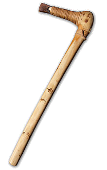
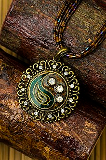
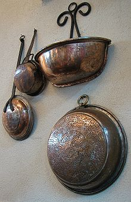

По византийско време металът бил известен под наименованието халкос. Медта е била много важен ресурс за римляни и византийци. Тя се свързвала с богинята Афродита и с планетата Венера в митологията и алхимията, което се дължало на сияещата красота, използването за направата на огледала в древни времена и връзката с Кипър, което било свещено за богинята. В алхимията символът на медта бил като символът на планетата Венера. Медта е била известна на едни от най-древните цивилизации и има история на повече от 10 000 години. Медно украшение, направено през 8700 г. пр.н.е, е било открито в днешен Северен Ирак.Медни и бронзови артефакти са намерени в древните шумерски градове и са датирани от около 3000 г. пр.н.е, а съществуват и египетски артефакти от мед и от медни сплави със съдържание на калай от приблизително същата дата. В една от пирамидите е била намерена медна водопроводна система, която датира от преди 5000 години.
  